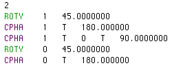

.gif) FIG.1
FIG.1
(SEO Files are called "MATNAME-engl.in")
Qubiter outputs files that list SEOs (SEO = sequence of elementary operations) in either plain or verbose form. There is a macro variable somewhere in Qubiter called "_write_verbose_engl_file" . When this variable is #defined (ditto, is not #defined) then a verbose (ditto, plain ) MATNAME-engl.in is outputted. Fig.1 is an example of a verbose SEO file, and Fig.2 is the plain SEO file obtained by deleting all comments from Fig.1.
FIG.1
 FIG.2
The first line of these files tells the number of bits NB. Each line after that represents a gate. There are six types of gates:
where alpha belongs to the set {0,1, ...,NB-1} and ang is a real number. This signifies the rotation of qubit alpha about the Y axis by an angle ang in degrees. In other words, exp[i sigmay(alpha) ang pi/180].
This is the same as ROTY except that the rotation is about the Z axis instead of the Y one.
where alpha belongs to the set {0,1, ...NB-1}. This signifies unconditional flipping (NOT) of qubit alpha.
CNOT alpha1 char1 alpha2 char2 ... alphar charr beta
where r >0, alpha1, alpha2, ...alphar, beta are distinct elements of {0,1, ...NB-1}, and char1, char2, ... charr are elements of { T, F }. This signifies a controlled not with r controls. First suppose r = 1 . If char is the character T, this signifies sigmax(beta)n(alpha). Read it as "c-not: if alpha is true, then flip beta." If char is the character F, this signifies sigmax(beta)1 - n(alpha). Read it as "c-not: if alpha is false, then flip beta." Cases wherer >1 are defined analoguosly. For example, CNOT 0 T 1 F 2 would signify sigmax(2)n(0)[1-n(1)] . Read it as "c-not: if bit 0 is true and bit 1 is false, then flip bit 2."
where ang is a real number. This signifies a phase factor exp[i ang pi/180]. Thus ang is an angle expressed in degrees.
where r >0, alpha1, alpha2, ...alphar are distinct elements of {0,1, ...NB-1}, char1, char2, ... charr are elements of { T, F }, and ang is a real number. This signifies a controlled phase factor with r controls. For example, PHAS 0 T 1 F 90 would signify exp[i(90)pi/180]n(0)[1-n(1)] . Read it as "phase shift: if bit 0 is true and bit 1 is false, then phase shift by 90 degrees." Thus ang is an angle expressed in degrees.
Verbose SEO files may contain any of the types of lines that a plain SEO may contain, plus some new ones. Line types not contained in plain SEO files:
This symbol separates the decompositions of different central matrices. (When one asks Qubiter to decompose a unitary matrix U, Qubiter assigns a central matrix to each node of a subset of the nodes of a binary tree, wherein the product of these central matrices in some order equals U. Then Qubiter decomposes each central matrix into a SEO.)
}
In this example, a central matrix is a direct sum of four D matrices. The CS angles of the first D matrix are 10 and 20 degrees. The CS angles of the second D matrix are 45 and 45 degrees. And so on. Hence, different D matrices are separated by an ampersand (&). With certain optimizations ON, Qubiter will extract complex phase factors from a central matrix before performing a CSD of the result. The curly brackets enclose those operations generated by the CSD after phase factors were extracted.
}
In this example, a central matrix is a diagonal unitary matrix. In other words, it is a diagonal matrix whose diagonal elements are simply phase factors of the form exp(i theta), where theta is a real number. In this example, the 8 thetas of the central matrix are 10, 20, 45, 45, 67, 89, 90, 90 degrees.
}
This just means that out of all the lines in the verbose SEO file, only 5 represent actual elementary operations; the rest are just comments.